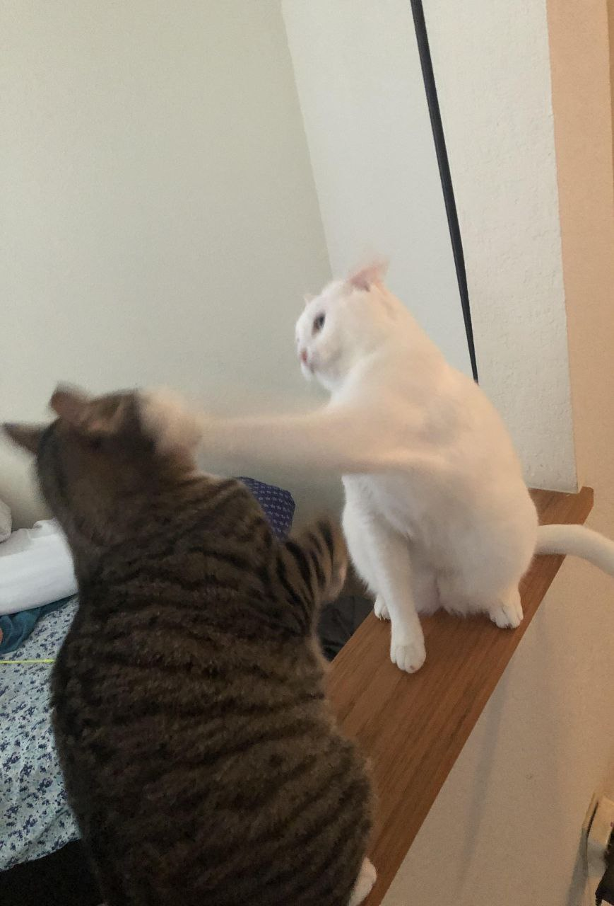
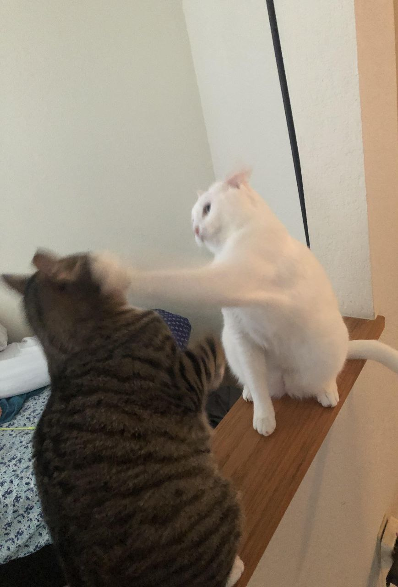
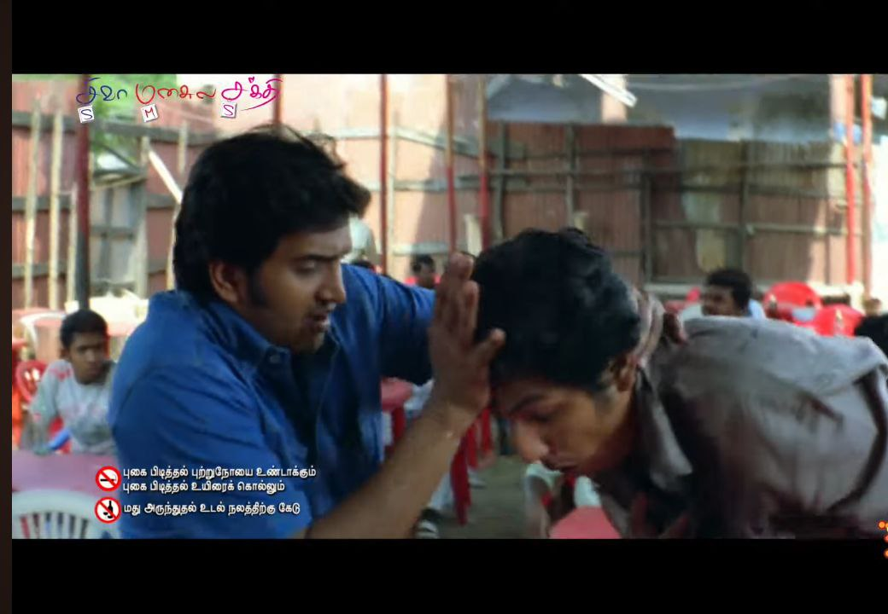
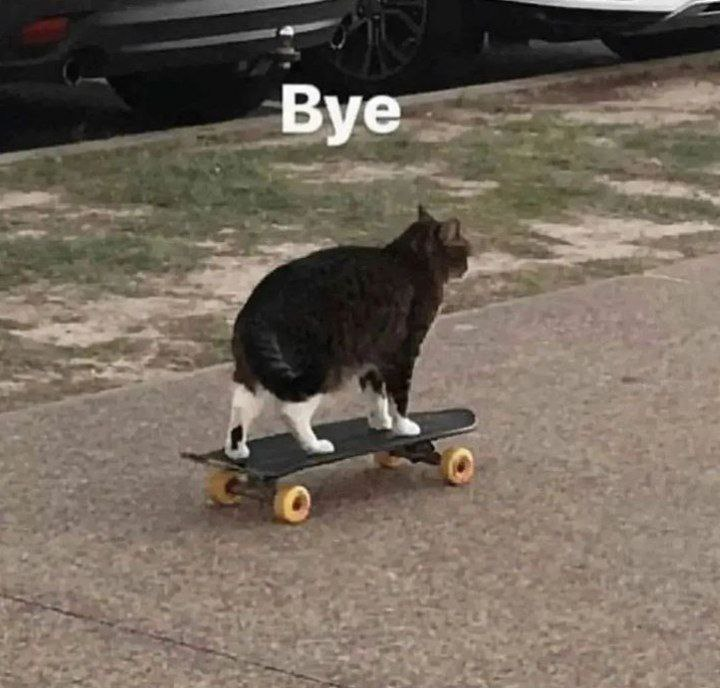
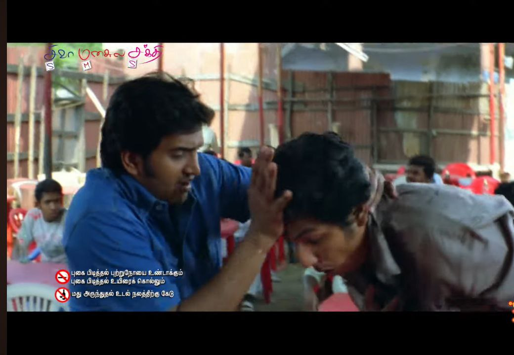
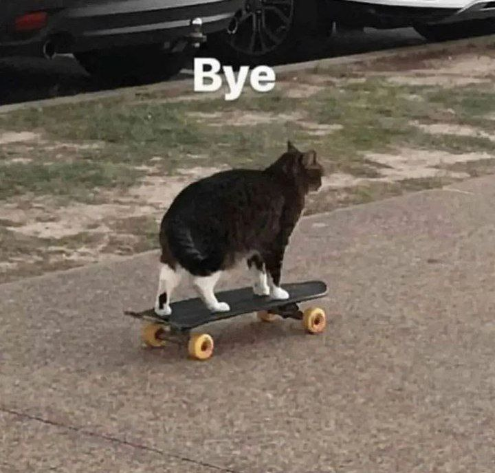
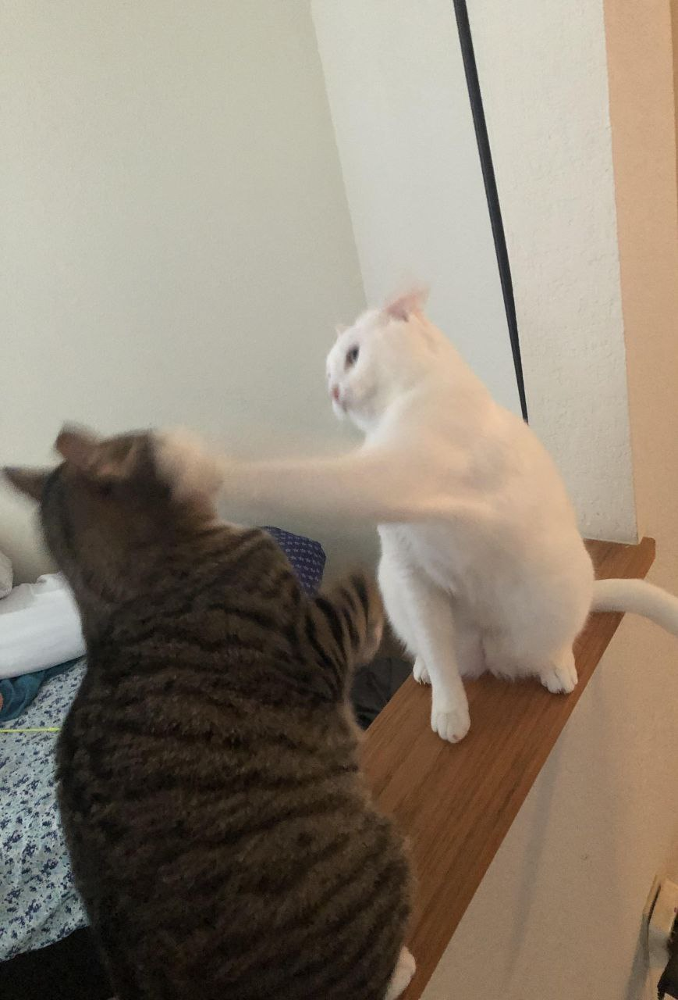
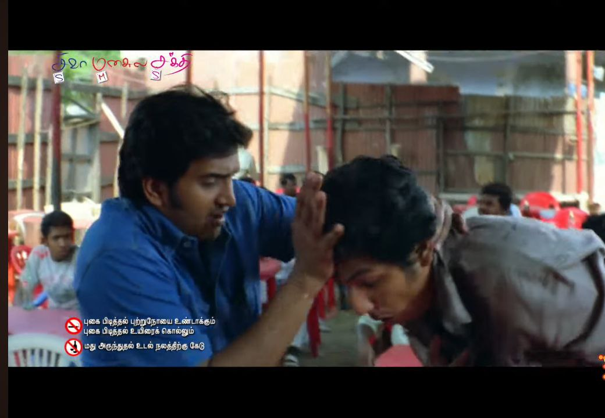
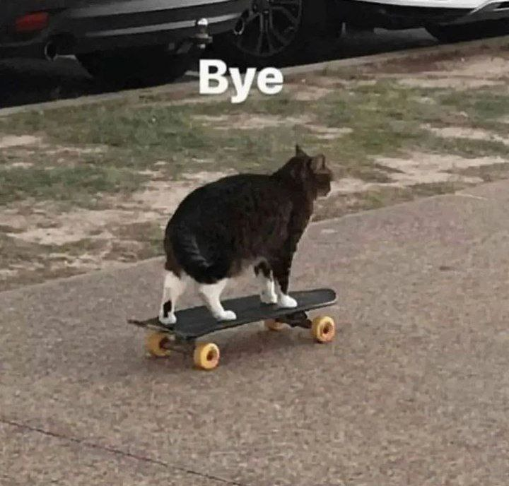

 



ipsumIf the Wi-Fi option has disappeared on your Asus gaming laptop,If the Wi-Fi option has disappeared on your Asus gaming laptop, it can be quite frustrating, but there are several steps you can take to troubleshoot and potentially resolve the issue. Here's what you can try:


